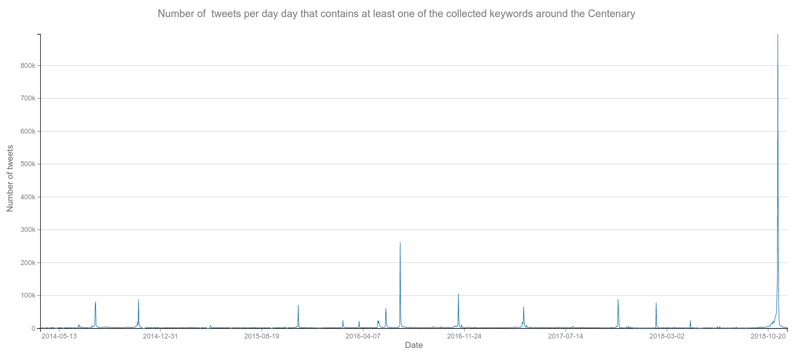
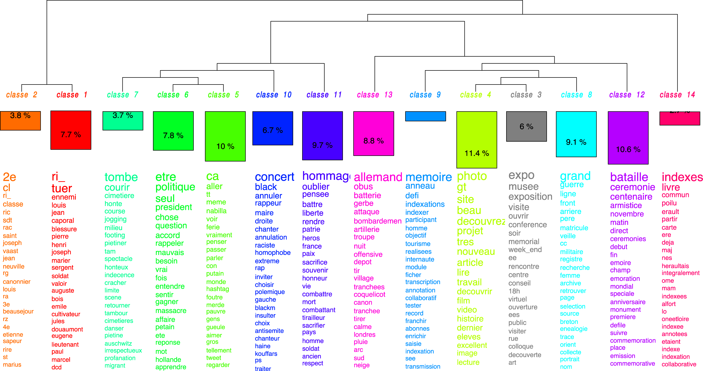
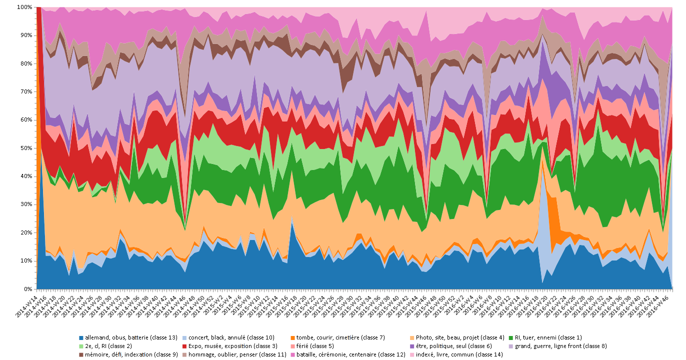
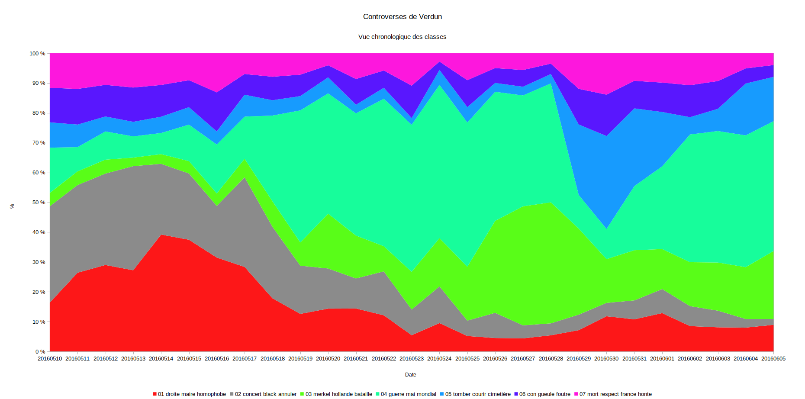
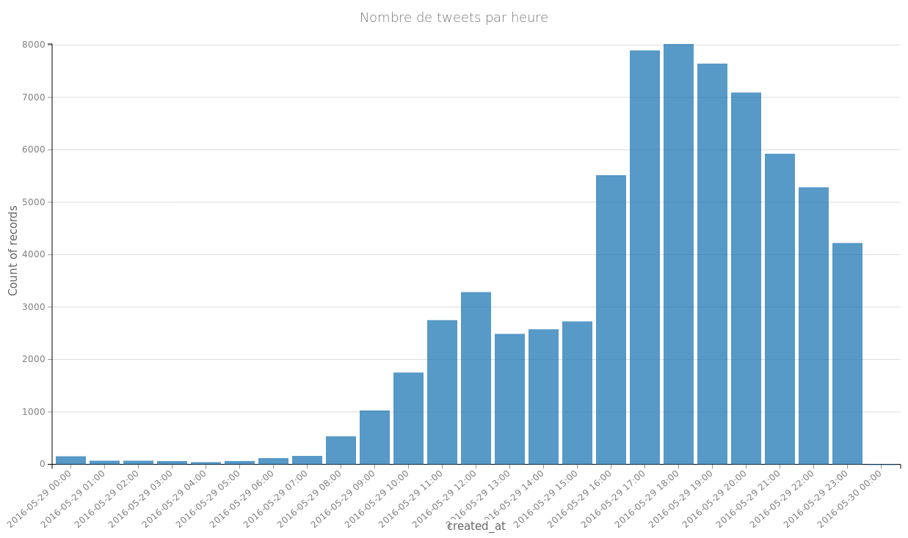

Si loin, si proche:
histoire, mémoire et lecture distante
à l’ère des données massives
Frédéric Clavert
(C2DH, fredeirc.clavert@uni.lu)
Colloque «histoire, langues et textométrie»
17 janvier 2019
Introduction
Comment faire face à des données massives
en tant qu’historien.ne?
En quoi la textométrie est-elle
l’une des réponses à cette question?
Plan
- Temporalités et textométrie: la Grande Guerre sur Twitter
- Textométrie et données massives
- Un nouveau paradigme quantitatif?
1. Temporalités et textométrie
L’exemple de la Grande Guerre sur Twitter
Le projet #ww1
La Grande Guerre sur Twitter
À la croisée des memory studies et de l’histoire contemporaine.
- Collecte de tweets depuis 2014
- mots-clés liés à la Grande Guerre et son Centenaire
- 7,3 millions de tweets
(900 000 pour le 11 novembre 2018 à lui seul)
Que font les réseaux sociaux numériques
aux (traces de) mémoires du passé?
Temporalité générale

Temporalité linguistique

Contenu des tweets en Français

Temporalité du contenu

Temporalité d’une crise
Le cas de Verdun

Le cas de Verdun (2)

Le cas Verdun (3)

2. Textométrie et données massives
Lecture distante
lecture proche
- Lecture des sources à l’ère numérique comme interaction entre lecture distante et lecture proche (Moretti 2007)
- Pratique de la textométrie: savoir revenir systématiquement à la source
- Voir apparaître un hashtag par la lecture distante, mais lire les tweets précis pour l’inclure ou non dans la collecte
- Analyser l’ensemble d’un corpus pour comprendre ses temporalités générales,
- Mais se concentrer sur des périodes particulières ou regarder la longue traîne d’un tweet unique
Enjeu: massivité des données
Enjeu important car implique:
- Évolution du matériel informatique à disposition
- Évolution des éléments statistiques et des «algorithmes»
Comment y faire face comme historien?
Histoire, données massives et bricolage
3. Histoire et données massives:
s’insérer dans un nouveau paradigme quantitatif ?
un nouveau paradigme quantitatif ?
- Les sciences sociales de troisième génération (D. Boullier)
- Nouveau paradigme quantitatif: machine / deep learning - nouvelles sources
Histoire, textométrie et nouveau paradigme quantitatif
- Quel rôle de la textométrie dans ce cadre?
- Comment s’y insère l’histoire?
- Problématique des RSNs comme sources primaires
- Quels usages?
- Nécessaire pour comprendre les traces laissées en lignes
- Nécessaire pour comprendre la diffusion de l’information sur les RSN
Bibliographie
- Boullier, Dominique. 2015. « Les sciences sociales face aux traces du big data ». Revue française de science politique 65 (5): 805–828. http://www.cairn.info/resume.php?ID_ARTICLE=RFSP_655_0805.
- ———. 2016. Sociologie du numérique. Paris: Armand Colin.
- Levi-Strauss, Claude. 1990. La pensée sauvage. Paris: Pocket.
- Lupton, Deborah. 2015. Digital sociology. Abingdon, Oxon: Routledge, Taylor & Francis Group.
- Moretti, Franco. 2007. Graphs, Maps, Trees: Abstract Models for Literary History. Verso.
- Schafer, Valérie. 2018. Temps et temporalités du Web. Intelligences numériques. Presses universitaires de Paris Ouest.